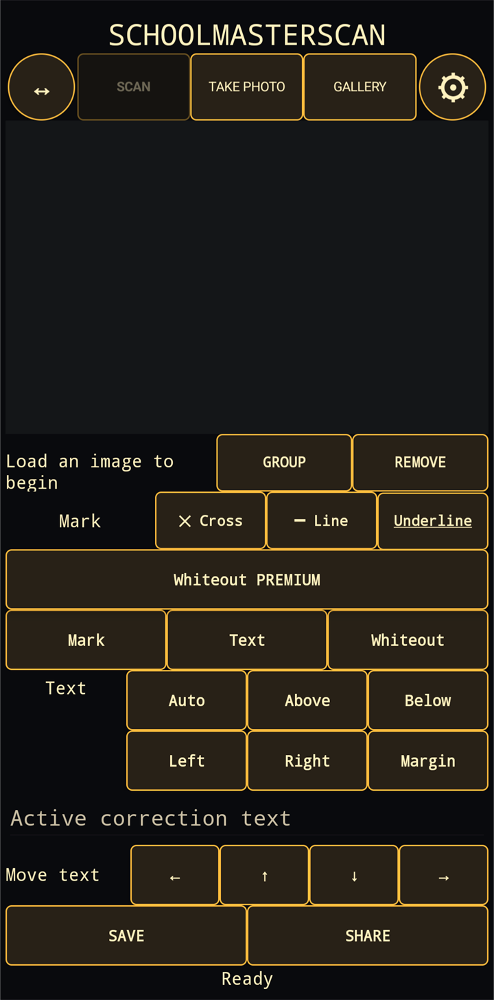

1. Capture an image
Scan is the default mode: SchoolMasterScan opens the document scanner integrated into Android/Google Play services and returns the captured document to the editor. You can also use Take Photo or select an existing image from the Gallery. The ↔ button fits the image to the workspace; the gear opens Settings.
2. Select and mark text
After text recognition, tap a word in the image. Group extends the selection and Remove deletes a selection. You can then apply a cross, line or underline. Colours and the default marking style can be adjusted in Settings.
3. Add a correction
Enter the wording in the active correction field and choose its position: automatic, above, below, left, right or in the margin. Use the arrow buttons for final fine adjustments.
Premium Whiteout
Whiteout is an optional Premium feature available as a separate purchase. It lets you cover part of the image and, when required, place new text in the corrected area.
4. Save or share
Save creates the final JPEG image in the device gallery. Share opens the Android share sheet so you can send it to another app. Always check the recognition and corrections before finishing.